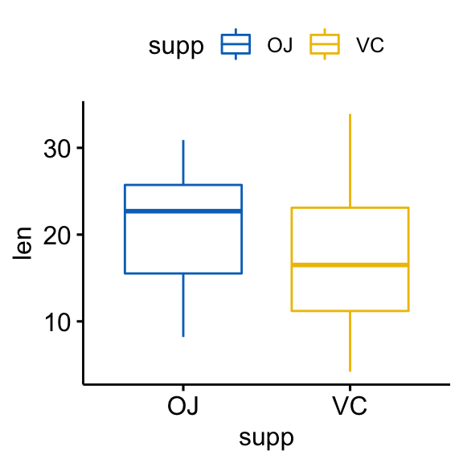
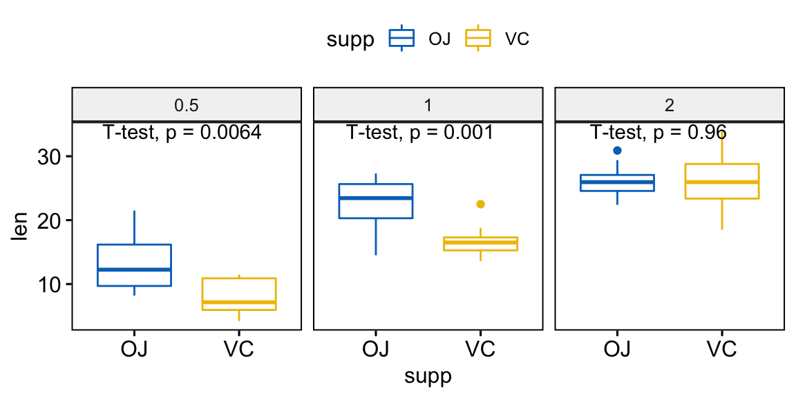

Provides a pipe-friendly framework to perform easily basic statistical tests in R. The output of each test is automatically transformed into a tidy data frame to facilitate visualization.
Main functions include:
t_test(): performs one-sample, two-sample and pairwise t-testswilcox_test(): performs one-sample, two-sample and pairwise Wilcoxon testsadjust_pvalue(): add an adjusted p-values column to a data frame containing statistical test p-valuesadd_significance(): add a column containing the p-value significance level# Install
if(!require(devtools)) install.packages("devtools")
devtools::install_github("kassambara/rstatix")library(rstatix)
library(ggpubr) ToothGrowth %>%
t_test(len ~ supp, paired = FALSE)
#> # A tibble: 1 x 6
#> .y. group1 group2 statistic p method
#> <chr> <chr> <chr> <dbl> <dbl> <chr>
#> 1 len OJ VC 1.915268 0.061 T-test
ToothGrowth %>% ggboxplot(
x = "supp", y = "len",
color = "supp", palette = "jco"
)
# Statistical test
ToothGrowth %>%
group_by(dose) %>%
do(t_test(data =., len ~ supp)) %>%
ungroup() %>%
adjust_pvalue() %>%
add_significance("p.adj")
#> # A tibble: 3 x 9
#> dose .y. group1 group2 statistic p method p.adj p.adj.signif
#> <dbl> <chr> <chr> <chr> <dbl> <dbl> <chr> <dbl> <chr>
#> 1 0.5 len OJ VC 3.1697328 0.0064 T-test 0.0128 *
#> 2 1.0 len OJ VC 4.0327696 0.0010 T-test 0.0030 **
#> 3 2.0 len OJ VC -0.0461361 0.9600 T-test 0.9600 ns
# Visualization
ggboxplot(
ToothGrowth, x = "supp", y = "len",
color = "supp", palette = "jco",facet.by = "dose"
) +
stat_compare_means(method = "t.test")
# pairwise comparisons
#::::::::::::::::::::::::::::::::::::::::
# As dose contains more thant two levels ==>
# pairwise test is automatically performed.
ToothGrowth %>% t_test(len ~ dose)
#> # A tibble: 3 x 9
#> .y. group1 group2 statistic p method p.adj p.signif
#> <chr> <chr> <chr> <dbl> <dbl> <chr> <dbl> <chr>
#> 1 len 0.5 1 -6.476648 1.3e-07 T-test 2.6e-07 ****
#> 2 len 0.5 2 -11.799046 4.4e-14 T-test 1.3e-13 ****
#> 3 len 1 2 -4.900484 1.9e-05 T-test 1.9e-05 ****
#> # ... with 1 more variables: p.adj.signif <chr>
# Comparison against reference group
#::::::::::::::::::::::::::::::::::::::::
# each level is compared to the ref group
ToothGrowth %>% t_test(len ~ dose, ref.group = "0.5")
#> # A tibble: 2 x 9
#> .y. group1 group2 statistic p method p.adj p.signif
#> <chr> <chr> <chr> <dbl> <dbl> <chr> <dbl> <chr>
#> 1 len 0.5 1 -6.476648 1.3e-07 T-test 1.3e-07 ****
#> 2 len 0.5 2 -11.799046 4.4e-14 T-test 8.8e-14 ****
#> # ... with 1 more variables: p.adj.signif <chr>
# Comparison against all
#::::::::::::::::::::::::::::::::::::::::
ToothGrowth %>% t_test(len ~ dose, ref.group = "all")
#> # A tibble: 3 x 9
#> .y. group1 group2 statistic p method p.adj p.signif
#> <chr> <chr> <chr> <dbl> <dbl> <chr> <dbl> <chr>
#> 1 len all 0.5 5.8222543 2.9e-07 T-test 8.7e-07 ****
#> 2 len all 1 -0.6600185 5.1e-01 T-test 5.1e-01 ns
#> 3 len all 2 -5.6094267 4.3e-07 T-test 8.7e-07 ****
#> # ... with 1 more variables: p.adj.signif <chr>